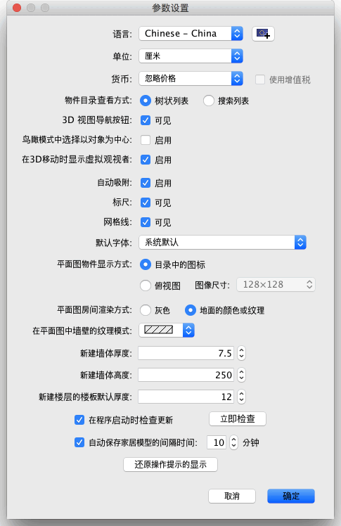

| 自定义参数设置 | |||
如果您要自定义 Sweet Home 3D 的参数设置，请在菜单上选择Sweet Home 3D→参数设置...（Mac OS X）或文件→参数设置...（其他操作系统）。  在“参数设置”窗口中，您可以选择 Sweet Home 3D 的用户界面使用的语言和平面图中用于标尺、网格以及用来显示长度和面积的单位。 使用“自动吸附”复选框可以启用或禁用在平面图中进行绘制墙体、放置物件等操作时的自动吸附功能。 “新建墙体厚度”的数值定义了绘制墙体时默认使用的墙体厚度。该设置不会影响家居模型中已有的墙体。 在对话框的下面还有一个“还原操作提示的显示”按钮。如果您在单击一些工具后出现的操作提示对话框中选择了“以后不再显示该提示”，那么使用该按钮可以将这些设置还原。也就是说，单击该按钮后，所有这些操作提示都会再次显示。
|


|